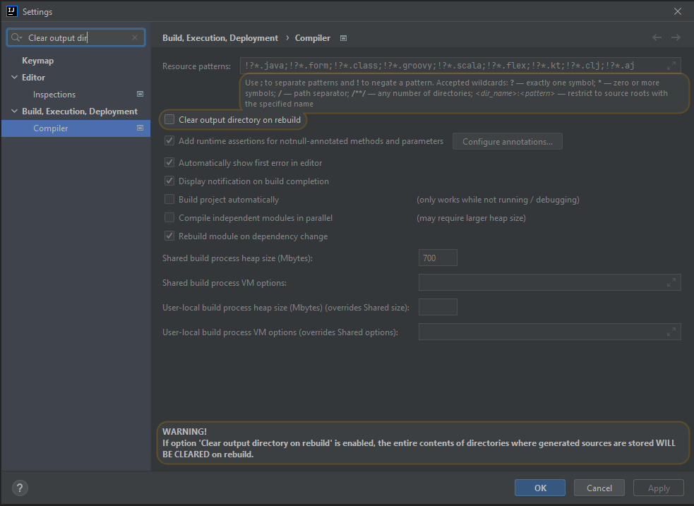

SIP Framework Core
Description
Core project for base SIP functionalities
Usage
To enable SIP Core features use @SIPIntegrationAdapter to annotate the Spring Boot entry class (no need to add @SpringBootApplication, it's included in the @SIPIntegrationAdapter)
Features
Actuator health check and metrics
SIP Core out-of-the-box information about health status of the adapter and the status of external systems with which it communicates. Provided checks are for HTTP(S), JMS and FTP (SFTP/FTPS) endpoints.
The health check functions will be executed periodically on a set interval and will only be available if actuator's HealthEndpoint is enabled.
Actuator can be accessed from {base_url}/actuator
To enable/disable health calculation or set its execution interval the following configuration properties are available:
sip:
core:
metrics:
external-endpoint-health-check:
enabled: true
scheduler:
fixed-delay: 900000
To customize health checks, or introduce health checks for other kinds of components, it is as simple as implementing the EndpointHealthConfigurer interface
@Configuration
public class EndpointMonitoringConfiguration {
@Bean
EndpointHealthConfigurer defaultHttpConfigurer() {
return registry -> registry.register("http*://**",
HttpHealthIndicators::urlHealthIndicator);
}
@Bean
EndpointHealthConfigurer ftpConfigurer() {
return registry -> registry.register("*ftp*://**",
FtpHealthIndicators::noopHealthIndicator);
}
@Bean
EndpointHealthConfigurer httpConfigurerById() {
return registry -> registry.registerById("processor_id",
HttpHealthIndicators::urlHealthIndicator);
}
}
There are a few possible ways to register health check indicators and they will be used in the following priority:
- by using the id of processor, it will be registered as the exact endpoint URI
- by using the exact endpoint URI as pattern
- by using wildcards (*) in pattern, priority is based on how close they match the URI
- default one for generic components
If the same endpoint is used in more than one route, meaning multiple processors with different ids have the same endpoint uri, it is not possible to register 2 different health check functions (check important note below). Only one function per endpoint is possible.
Important: If same uri pattern is specified more than one time by any of these methods, DuplicateUriPatternError will be thrown and application will not be able to start.
Warning: Only one health indicator may exist for an exact endpoint URI.
It is worth noting that the HTTP(S) Health Check lists all existing HTTP(S) endpoints by default, but sets the status to UNKNOWN. The reason for this is that for detected HTTP(S) endpoints a GET request is executed which may cause an unintended change of state of the system to be invoked. Thus, for this behavior to not occur, health checks should be added explicitly. To add an explicit Health Check for a URL it can be done in the following way.
@Bean
EndpointHealthConfigurer enableHttpHealthCheckForX1F() {
return registry -> registry.register("https://x1f.one",
HttpHealthIndicators::urlHealthIndicator);
}
In case the URL https://www.x1f.one/kontakt/ is requested by the adapter, then on the one hand the explicit URL could be passed as
a parameter to register() or wildcards could be used to add a Health Check for this URL and at the same
time also matches https://www.x1f.one/impressum/. The passed argument to register() would look like this https://x1f.one/**.
However, HTTP(S) Health Checks can only be added for URLs that have also been detected in the adapter. In order to find out
what URLs have been discovered one could inspect the result of {base_url}/actuator/health.
How to configure endpoint health checks:
To inspect the health of Camel endpoints in an integration adapter, one needs to:
Make sure that this project uses sip-integration-starter maven dependency. Instead of using @SpringBootApplication, use Java annotation @SIPIntegrationAdapter to annotate the Spring Boot entry class. Configure the application actuator's Health endpoint to display details of health, as shown below.
All prerequisites from above are met if you create an integration adapter using SIP archetype.
Spring Boot Actuator:
#configuring health endpoint
management:
endpoint:
health:
show-details: always #or when_authorized if security is in place
Health Status Gauge
The calculated health status is also available as a gauge inside /actuator/metrics.
If all endpoints are healthy it returns 0, otherwise 1.
By default, it is named sip.core.metrics.health, but can be changed via configuration.
sip:
core:
metrics:
gauge: "sip.core.metrics.health"
Adapter lifecycle manipulation in runtime
SIP Core provides a possibility to manipulate adapter lifecycle in runtime by controlling registered Camel routes.
All registered routes with basic info can be listed by using the following URI:
GET /actuator/adapterroutes
Or for a details about specific routes a query parameter can be added:
GET /actuator/adapterroutes?ids=route1,route2
More detailed info view for only one exact route can be seen by providing route id into following URI:
GET /actuator/adapterroutes/{routeId}
The following operations (case sensitive) can be executed per route, for all route:
- start
- stop
- suspend
- resume
- reset
To execute an operation on all routes, use following URIs:
POST /actuator/adapterroutes/all/{operation}
There is a possibility to execute a route lifecycle operation on an exact route, by providing route id and operation. This can be achieved by using following URI:
POST /actuator/adapterroutes/{routeId}/{operation}
Logging Translation
Adds possibility to translate log messages. This is achieved by using a custom logging encoder, which is able to translate log messages.
By default, translation service is not activated, thus in order to use it a logback.xml file should be provided in resources. In this file we can specify that the adapter uses a custom logging encoder, which provides translations.
<appender name="STDOUT" class="ch.qos.logback.core.ConsoleAppender">
<!-- encoders are by default assigned the type
ch.qos.logback.classic.encoder.PatternLayoutEncoder -->
<encoder class="one.x1f.sip.foundation.core.translate.logging.SIPPatternLayoutEncoder">
<pattern>%d{yyyy-MM-dd HH:mm:ss.SSS} [%thread] %-5level %logger{36}: %msg%n</pattern>
</encoder>
</appender>
Files for defining translation values should be created inside 'translations' directory as a bundle of .property files, under a common name, which should be extended by a suffix in following format _{language}.
Each file consists of keys, shared in the bundle, followed by its value as a phrase in the language used.
Warning: Be mindful of how MessageFormat handles String. Some characters, like apostrophe ('), are used as special characters and need to be escaped as shown in the example below.
More details can be found here: MessageFormat
amessagekey = A message value
amessagekey.welcome_{} = Hello {0}
amessagekey.missingbean = Bean {0} doesn''t exist
The keys are automatically recognized and should be used in logs.
log.info("amessagekey");
log.info("amessagekey.welcome_{}", "A user");
It can also be automatically used by Camel's log processor. In this case message key MUST be separated from parameters by blank space:
.log("amessagekey");
.log("amessagekey.welcome_{} ${header.userName}");
Enabling, disabling and other settings can be done in the configuration.
sip:
core:
translation:
fileLocations: classpath:translations/translated-messages, classpath:translations/messages
default-encoding: "UTF-8"
fallback-to-system-locale: false
use-code-as-default-message: true
lang: en
Changing log level programmatically
Actuator enables us to dynamically change log levels of all loggers during runtime. This can be accomplished by using the following POST request:
http://localhost:8080/actuator/loggers/{logger-name}
Header: Content-Type: application/json
Body: {
"configuredLevel": "TRACE"
}
Log levels can be independently changed and will be individually set per logger or on root.
We can also use logback.xml auto scan to update log levels.
Here we need to enable auto scan and set the interval on which it occurs in logback.xml configuration, and then we can open logback.xml in target directory* and edit the log levels on loggers defined there.
<configuration scan="true" scanPeriod="30 seconds"/>
This works for all loggers except the ones on Camel routes.
Tracing
SIP Core extends Camel's built-in Tracer for tracing and logging information about all processors an exchange went through. Configuration of the Tracer is enabled by adapting ExchangeFormatter.
Tracing functionality is set to false by default. In order to enable it, the following configuration should be added to the application.yml:
sip:
core:
tracing:
enabled: true
Logging in console is enabled by default, but it can be turned off with sip.core.tracing.log property.
Configuring the ExchangeFormatter can be achieved through configuration file:
sip:
core:
tracing:
enabled: true
log: true
exchange-formatter:
multiline: true
showHeaders: true
showExchangeId: true
showProperties: true
maxChars: 100
Exchanges will contain the "traceSet" header, which appears as a list of ordered exchange Ids, appended based on EIP used in a route and separated by a coma. This allows to easily track the path of a message.
OpenAPI Descriptor
Framework provides an Open API description of all custom, Camel's RestDSL or Spring provided endpoints within your adapter. Endpoints are created as extension of Spring's actuator.
By using a sip-archetype code generator, you receive an adapter with a default setup for OpenAPI.
For working with Swagger OpenAPI, check their official documentation.
Adding Custom Swagger Docs:
SIP Framework provides a Swagger documentation for the actuator endpoints out of the box. In case a custom Swagger
documentation is needed it could be added by including the Swagger Apache Camel component. This component is only
supporting the REST DSL component. For controller classes annotated with @WebController an entry is added to the
default swagger docs. This might not be the expected behavior for which reason the REST DSL component is recommended.
The custom Swagger documentation could easily be added by defining it in the restConfiguration as seen in the
following listing.
restConfiguration()
.contextPath("/adapter")
.apiContextPath("/api-docs")
.apiContextRouteId("api-docs");
If the application has a route based on the REST DSL a Swagger documentation is generated automatically.
rest("/api/v1")
.tag("Data Controller").description("REST service for creating new objects")
.consumes(MediaType.APPLICATION_JSON_VALUE).produces(MediaType.APPLICATION_JSON_VALUE)
.post("/data")
.type(DataRequest.class)
.description("Create a new object")
.outType(DataResponse.class)
.to("direct:handleRequest");
This will create a new Swagger documentation for the REST service. For further information see the Apache Camel
documentation of the Swagger
and REST DSL component. In case the custom Swagger documentation
should be displayed by default in the Swagger UI you can configure it accordingly in the application.yaml file.
springdoc:
show-actuator: true
api-docs:
path: /api-docs #default swagger docs
swagger-ui:
url: /adapter/api-docs #custom swagger docs set as default
path: /swagger-ui.html
Based on this configuration the custom Swagger documentation is accessible by /adapter/api-docs.
SIP Details in actuator info endpoint
Under actuator endpoint /actuator/info there is basic information about the adapter (adapter-name, adapter-version,
sip-framework-version).
Additionally, there is also a list of all markdown files located in the adapter root directory, with their names and
content exposed.
By default, a mandatory build-info maven plugin is located in the pom.xml of adapter's application
module, which provides all basic information for this feature. We highly recommend using this plugin in your adapter!
Warning about potential issue during development:
There is one unpredictable problem with this feature that could happen only in your local environment and it
depends on IDE used for development. It is happening only after initial adapter generation and build/rebuild process
is executed after mvn clean install command.
Keep in mind that even if build and rebuild processes are not executed explicitly, simple running of the adapter could execute them in the background, depending on IDE used.
Build/rebuild processes are deleting some generated sources. In our case build-info.properties which is used for fetching adapter basic information is deleted.
The problem itself could be resolved by doing build/rebuild explicitly before mvn clean install.
Or for example in IntelliJ IDE by updating the specific settings:
Uncheck "Clear Output Directory On Rebuild" field which can be found under File -> Settings -> Build, Execution, Deployment -> Compiler. Keep in mind that this setup has to be done with every new adapter created or new IntelliJ repository used.
Check the image and additional warning message by IntelliJ:
WARNING
If option Clear output directory on rebuild is enabled, the entire contents of directories where generated sources are stored WILL BE CLEARED on rebuild.

Exception handling
SIP Framework offers a few types of exceptions. The base ones are: - SIPFrameworkException - used for exceptions that may occur in the framework - SIPAdapterException - used in adapter development, all custom exceptions should be extended from it - ModelValidationException - derived from SIPAdapterException, should be thrown for invalid models - ModelTransformationException - derived from SIPAdapterException, should be thrown for unsuccessful model transformation
If there is a need for additional exceptions it is highly encouraged that they have one of SIP base exceptions as parent class. This provides uniformed data of exception origin for easier handling.